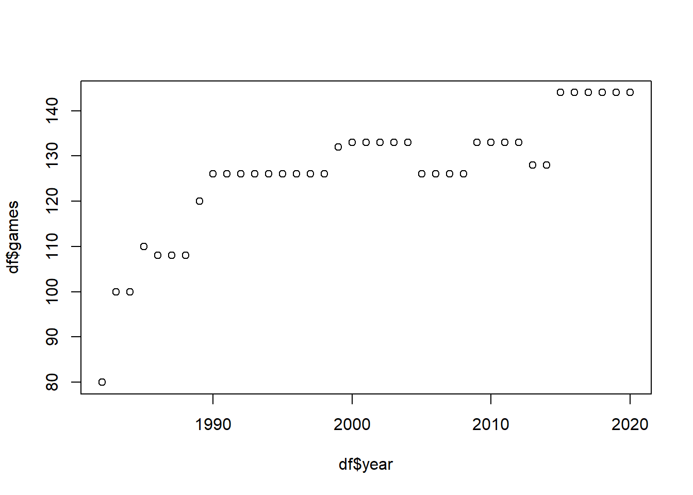

Spring is the season when baseball starts. In Korea, baseball is also the most popular league that attracts the largest number of spectators among all professional sports, and I have been a big fan since I was young. As you know, baseball is a sport with countless numbers, and this data analysis is actually done a lot. I can’t think of an interesting way to use and learn various statistical techniques in the subject of quantity analysis than using the sport of baseball. Therefore, I chose baseball as the my final project topic.
Setting Research Problem
Baseball is a game in which each nine-member team competes for nine innings to score more points. It is obviously a player who participates here. However, the baseball team is not made up of only players. Each baseball team has a manager, who decides who will participate in the game before the game, sets the batting order, and during the game, replaces pitchers, uses pinch hitters, and steals.
However, there are various controversies over how much of these managers account for in this game. This controversy varies from league to league, for example, in the U.S. Major League Baseball, the manager tends to be viewed as an organization manager, and in Asia, such as Japan and Korea, the manager is often treated as a general commanding the army in battle. In other words, in the case of the Asian league, there are many views that the manager actually has the ability to increase the team’s score and reduce the number of runs by performing various operations within the game. On the contrary, in the case of Major League Baseball, the prevailing perception is that the proportion of manager actually involved in the team’s scoring and losing points in the game is very small.
There may be various opinions on where this difference in perception comes from. Of course, it should be considered that the environment of the game called baseball is very different from country to country. However, in the United States, various empirical studies have been conducted on these topics using vast amounts of actual data, but in Korea, these studies are still in their early stages. With this in mind, I would like to use actual data from Korean baseball to empirically check how the manager’s intervention affects a single game. In other words, the manager’s organizational management capabilities, the ability to manage and motivate players, are separate, and simply want to find out how often he operates in a game, that is, how much he intervenes in the game, affects the team’s scoring ability.(Here, the correlation between the team’s ability to curb losing points and the manager’s intervention is also important, but it will be excluded from this project. This is because unlike batting, in the case of defense, it is not only difficult to quantify related variables, but also difficult to obtain such data.)
In conclusion, the research question of this project that I set is, will the more intervention from the coach, the better the scoring ability of the baseball team?
Accordingly, the research hypothesis will be set as “the more intervention the coach has, the more points the team has.” At this time, the null hypothesis is that “the manager’s intervention in the game does not increase the team’s score.”
Research Design
Key Concepts and Operational Definitions
A baseball team’s score is simply available. However, it is necessary to first determine how to define the manager’s intervention. There are various roles that managers can play in baseball’s offense. They include determining the batting order, using pinch-hitters, bunting, etc. Although it has not been confirmed yet, the director’s intervention in this project will be determined by the number of attempts to steal and bunt in consideration of the ease of obtaining data. In summary, the independent variable is the baseball manager’s intervention in the game(offense), and the dependent variable is the team’s score.
How to test hypothesis
There are many ways to do this. First of all, it is possible to simply compare the average score between teams with a lot of manager intervention and teams with less manager intervention. However, this simple comparison may not take into account the team’s differences in offensive power. In other words, if a team with strong offensive power (i.e., a team with the ability to score more points without the manager’s intervention) had more coach intervention, the conclusion could be distorted. Therefore, considering this, a method of obtaining the expected score level of each team using a regression model and comparing how much the actual score was can be used.
Explore the data
The Korean professional baseball league was launched in 1982 and is called the KBO(Korea Baseball Organization) League. Fortunately, a jounalist provided a career record of the kbo league from 1982 to 2020 and I used it, and all Korean words included in the data were modified in English.
Rows: 313 Columns: 22
── Column specification ────────────────────────────────────────────────────────
Delimiter: ","
chr (1): team
dbl (21): year, g, batters, tpa, ab, h, 2b, 3b, hr, bb, ibb, hbp, so, rbi, r...
ℹ Use `spec()` to retrieve the full column specification for this data.
ℹ Specify the column types or set `show_col_types = FALSE` to quiet this message.
Code
win_lose <-read_csv("_data/kbo_win_lose_eng.csv")
Rows: 313 Columns: 8
── Column specification ────────────────────────────────────────────────────────
Delimiter: ","
chr (1): team
dbl (7): year, games, win, lose, tie, runs scored, runs allowed
ℹ Use `spec()` to retrieve the full column specification for this data.
ℹ Specify the column types or set `show_col_types = FALSE` to quiet this message.
‘batting’ is a team-specific batting record related to the offense, and ‘win_lose’ is a team-specific winning and losing record by year.
For easy analysis, these two data are combined into one.
Now, let’s briefly explore the data as an introduction to the kbo league.(For reference, each team’s name has been unified to the most recent name if it has been changed.)
You can see the number of teams participating in the league by year and know the number of years participating in the league for each team. In other words, in the 39 years leading up to 2020, the number of participating teams increased from 6 to 10, and the total number of teams that existed was 12. (2 teams disbanded, Unicorns and Raiders)
Code
plot(df$year, df$games)

Looking at the number of games played by each team by year, it can be seen that it increased from 80 games d in 1982 to 144 games in 2020.
Finally, let’s briefly look at various variables related to hitting.
Code
summary(df[,10:28])
batters tpa ab h 2b
Min. : 863 Min. :2954 Min. :2628 Min. : 637 Min. :110.0
1st Qu.:1560 1st Qu.:4710 1st Qu.:4119 1st Qu.:1040 1st Qu.:171.0
Median :1645 Median :4975 Median :4318 Median :1143 Median :197.0
Mean :1620 Mean :4927 Mean :4301 Mean :1149 Mean :198.1
3rd Qu.:1729 3rd Qu.:5254 3rd Qu.:4549 3rd Qu.:1264 3rd Qu.:223.0
Max. :2022 Max. :5870 Max. :5176 Max. :1601 Max. :304.0
3b hr bb ibb hbp
Min. : 3.0 Min. : 29.0 Min. :221.0 Min. : 2.0 Min. : 23.00
1st Qu.:16.0 1st Qu.: 76.0 1st Qu.:397.0 1st Qu.:13.0 1st Qu.: 51.00
Median :20.0 Median :101.0 Median :453.0 Median :17.0 Median : 65.00
Mean :21.4 Mean :106.8 Mean :445.8 Mean :17.8 Mean : 66.05
3rd Qu.:26.0 3rd Qu.:134.0 3rd Qu.:499.0 3rd Qu.:22.0 3rd Qu.: 80.00
Max. :62.0 Max. :234.0 Max. :621.0 Max. :48.0 Max. :130.00
so rbi r sh
Min. : 254.0 Min. :272.0 Min. :302.0 Min. : 21.00
1st Qu.: 622.0 1st Qu.:464.0 1st Qu.:499.0 1st Qu.: 57.00
Median : 780.0 Median :554.0 Median :590.0 Median : 75.00
Mean : 755.8 Mean :558.4 Mean :594.9 Mean : 76.36
3rd Qu.: 905.0 3rd Qu.:650.0 3rd Qu.:687.0 3rd Qu.: 91.00
Max. :1208.0 Max. :898.0 Max. :944.0 Max. :153.00
sf sb cs gidp
Min. :12.00 Min. : 35 Min. : 20.00 Min. : 35.00
1st Qu.:30.00 1st Qu.: 85 1st Qu.: 45.00 1st Qu.: 86.00
Median :37.00 Median :105 Median : 53.00 Median : 97.00
Mean :37.13 Mean :108 Mean : 54.61 Mean : 97.46
3rd Qu.:44.00 3rd Qu.:130 3rd Qu.: 63.00 3rd Qu.:111.00
Max. :83.00 Max. :220 Max. :101.00 Max. :148.00
e
Min. : 61.00
1st Qu.: 85.00
Median : 95.00
Mean : 95.47
3rd Qu.:105.00
Max. :135.00
Source Code
---title: "Final Project Check In"author: "Young Soo Choi"description: "Final Project Check In"date: "03/22/2023"format: html: toc: true code-fold: true code-copy: true code-tools: truecategories: - Final Project---# IntroSpring is the season when baseball starts. In Korea, baseball is also the most popular league that attracts the largest number of spectators among all professional sports, and I have been a big fan since I was young. As you know, baseball is a sport with countless numbers, and this data analysis is actually done a lot. I can't think of an interesting way to use and learn various statistical techniques in the subject of quantity analysis than using the sport of baseball. Therefore, I chose baseball as the my final project topic. # Setting Research ProblemBaseball is a game in which each nine-member team competes for nine innings to score more points. It is obviously a player who participates here. However, the baseball team is not made up of only players. Each baseball team has a manager, who decides who will participate in the game before the game, sets the batting order, and during the game, replaces pitchers, uses pinch hitters, and steals.However, there are various controversies over how much of these managers account for in this game. This controversy varies from league to league, for example, in the U.S. Major League Baseball, the manager tends to be viewed as an organization manager, and in Asia, such as Japan and Korea, the manager is often treated as a general commanding the army in battle. In other words, in the case of the Asian league, there are many views that the manager actually has the ability to increase the team's score and reduce the number of runs by performing various operations within the game. On the contrary, in the case of Major League Baseball, the prevailing perception is that the proportion of manager actually involved in the team's scoring and losing points in the game is very small.There may be various opinions on where this difference in perception comes from. Of course, it should be considered that the environment of the game called baseball is very different from country to country. However, in the United States, various empirical studies have been conducted on these topics using vast amounts of actual data, but in Korea, these studies are still in their early stages. With this in mind, I would like to use actual data from Korean baseball to empirically check how the manager's intervention affects a single game. In other words, the manager's organizational management capabilities, the ability to manage and motivate players, are separate, and simply want to find out how often he operates in a game, that is, how much he intervenes in the game, affects the team's scoring ability.(Here, the correlation between the team's ability to curb losing points and the manager's intervention is also important, but it will be excluded from this project. This is because unlike batting, in the case of defense, it is not only difficult to quantify related variables, but also difficult to obtain such data.)In conclusion, the research question of this project that I set is, will the more intervention from the coach, the better the scoring ability of the baseball team?Accordingly, the research hypothesis will be set as "the more intervention the coach has, the more points the team has." At this time, the null hypothesis is that "the manager's intervention in the game does not increase the team's score."# Research Design## Key Concepts and Operational DefinitionsA baseball team's score is simply available. However, it is necessary to first determine how to define the manager's intervention. There are various roles that managers can play in baseball's offense. They include determining the batting order, using pinch-hitters, bunting, etc. Although it has not been confirmed yet, the director's intervention in this project will be determined by the number of attempts to steal and bunt in consideration of the ease of obtaining data.In summary, the independent variable is the baseball manager's intervention in the game(offense), and the dependent variable is the team's score.## How to test hypothesisThere are many ways to do this.First of all, it is possible to simply compare the average score between teams with a lot of manager intervention and teams with less manager intervention.However, this simple comparison may not take into account the team's differences in offensive power. In other words, if a team with strong offensive power (i.e., a team with the ability to score more points without the manager's intervention) had more coach intervention, the conclusion could be distorted.Therefore, considering this, a method of obtaining the expected score level of each team using a regression model and comparing how much the actual score was can be used.# Explore the dataThe Korean professional baseball league was launched in 1982 and is called the KBO(Korea Baseball Organization) League. Fortunately, a jounalist provided a career record of the kbo league from 1982 to 2020 and I used it, and all Korean words included in the data were modified in English.source: https://github.com/bigkini/kindeR```{r}library(tidyverse)batting <-read_csv("_data/kbo_team_batting_eng.csv")win_lose <-read_csv("_data/kbo_win_lose_eng.csv")```'batting' is a team-specific batting record related to the offense, and 'win_lose' is a team-specific winning and losing record by year.For easy analysis, these two data are combined into one.```{r}df<-merge(win_lose, batting, by=c("year", "team"))```Now, let's briefly explore the data as an introduction to the kbo league.(For reference, each team's name has been unified to the most recent name if it has been changed.)```{r}head(df)tail(df)``````{r}table(df$year)table(df$team)```You can see the number of teams participating in the league by year and know the number of years participating in the league for each team. In other words, in the 39 years leading up to 2020, the number of participating teams increased from 6 to 10, and the total number of teams that existed was 12. (2 teams disbanded, Unicorns and Raiders)```{r}plot(df$year, df$games)```Looking at the number of games played by each team by year, it can be seen that it increased from 80 games d in 1982 to 144 games in 2020.Finally, let's briefly look at various variables related to hitting.```{r}summary(df[,10:28])```